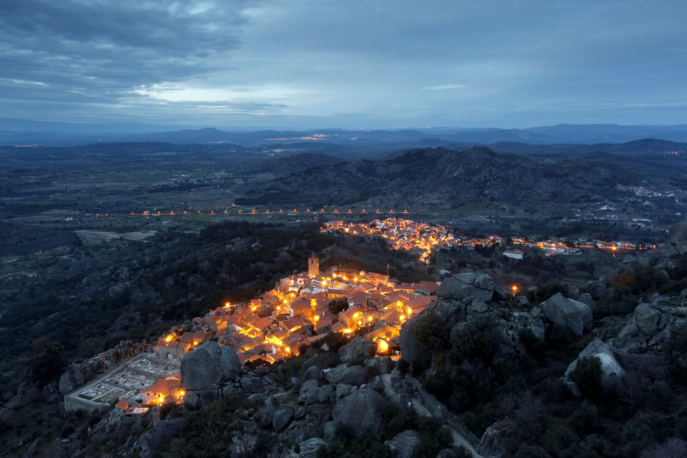

Alcandorada num cabeço que se impõe ao olhar na maior parte dos horizontes, a Aldeia Histórica de Portugal de Monsanto detém um encanto singular. Com títulos de "Aldeia Mais Portuguesa de Portugal" (1938) e "Aldeia Histórica" (1995), Monsanto é um ícone turístico e uma experiência única para os visitantes. Com forais concedidos por D. Afonso Henriques, D. Sancho I, D. Sancho II e D. Manuel, a parte mais antiga situa-se no ponto mais alto, onde os Templários construíram uma cerca com torre de menagem.
Monsanto situa-se a nordeste das Terras de Idanha, numa elevação escarpada que atinge 758 metros. Com vestígios arqueológicos do Paleolítico, o local guarda registros de um castro lusitano e ocupação romana. Conquistada por D. Afonso Henriques em 1165, foi entregue aos Templários, que edificaram o Castelo. O primeiro foral foi concedido em 1174, e o local foi repovoado e fortificado contra invasores ao longo dos séculos.
Várias opções de hospedagem estão disponíveis na aldeia, que oferecem a oportunidade de vivenciar o local histórico em sua totalidade.
Restaurantes locais servem pratos típicos da região, proporcionando uma imersão na gastronomia de Monsanto.